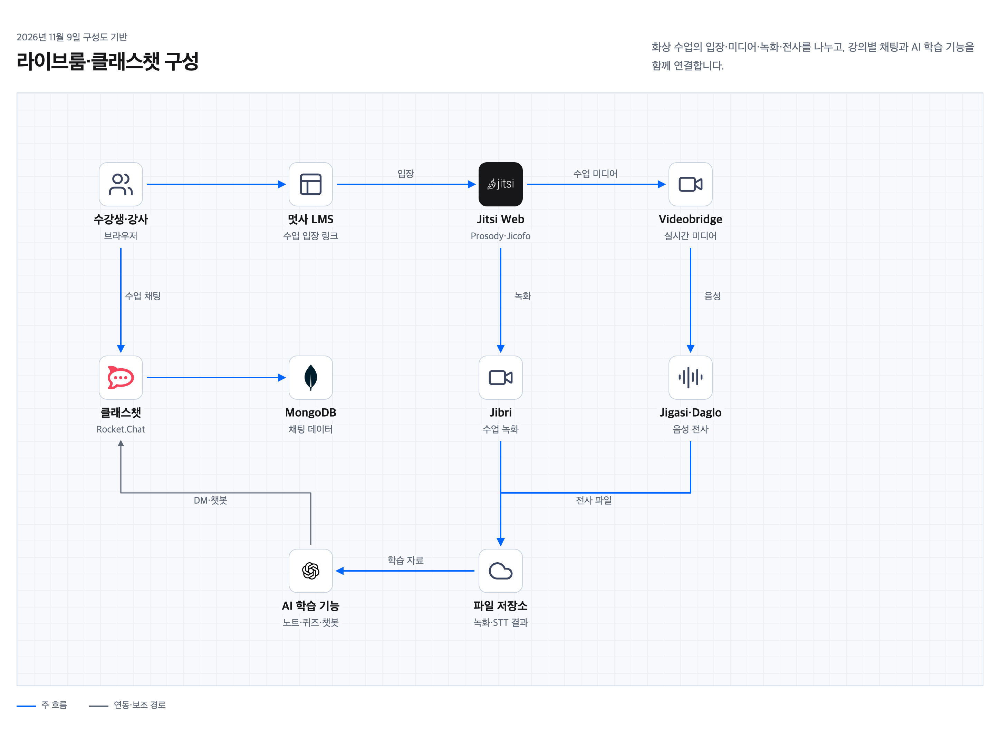

2025.04 ~ 현재
라이브룸 실시간 교육 플랫폼 구축
여러 강의실의 실시간 화상수업을 자체 운영하는 플랫폼입니다. 녹화와 실시간 자막, STT 기반 요약노트를 제공하고 강사 모니터링과 부정훈련 방지를 위한 참가자 얼굴 인식을 연결했습니다.
22개 과정 · 수강생 900여 명
실시간 수업·녹화·자막에서 AI 복습과 수업 모니터링까지
- 역할
- Jitsi 기반 다중 화상회의 환경과 LMS 연동 API를 구축하고 녹화·실시간 자막·STT 요약노트와 수업 모니터링 기능을 연결했습니다. 클라우드 선정과 용량 검증, 운영 개선도 맡았습니다.
- 기술
- Jitsi Meet·JVB·Jigasi·Jibri, WebRTC, Python(FastAPI), OpenAI API, Docker Compose, OCI, KT Cloud, S3, STT, Selenium Grid

판단과 이유
외부 화상회의 도구에 나뉘어 있던 수업 운영과 학습 데이터를 LMS에서 함께 다루도록 구성했습니다. 수업 중에는 자막과 모니터링을 활용하고 수업 후에는 녹화와 요약노트로 복습할 수 있게 했습니다. 도입 환경은 같은 조건으로 측정한 비용과 수용 인원을 비교해 선택했습니다.
구현·개선
- 실시간 다중 화상회의 Jitsi Meet과 미디어 브리지(JVB)를 나눠 여러 강의실의 수업을 동시에 운영하도록 구성했습니다. LMS의 입장 토큰과 강의실 생성·종료 API를 개발해 수강 과정에서 화상수업으로 이어지게 했습니다.
- 녹화와 실시간 자막 Jibri 녹화와 Jigasi STT를 연결했습니다. 강의 음성을 실시간 자막으로 제공하고 녹화와 STT 결과를 S3에 자동 저장하도록 구성했습니다.
- STT 기반 요약노트 강의 음성을 텍스트로 변환한 뒤 요약노트를 생성해 수강생에게 제공했습니다. 수업 기록을 복습 자료로 활용하도록 학습 기능에 연결했습니다.
- 강사 모니터링과 부정훈련 방지 강사 모니터링(KAI)을 연결해 수업 품질 관리를 지원했습니다. 참가자 얼굴 인식을 적용해 부정훈련을 방지하기 위한 참여 확인 기능도 갖췄습니다.
- ALEX 챗봇 연동 설계 수업에서 수집한 STT 데이터를 ALEX 챗봇의 수업 맥락으로 활용하는 연동 구조를 설계했습니다.
- 용량 검증과 운영 개선 클라우드 4곳에서 최대 100명 전사 테스트로 비용과 수용 인원을 비교하고 Selenium Grid로 다중 회의실 부하를 검증했습니다. 미디어 브리지 분산과 스트림 설정을 조정해 인원 증가에 따른 화면·음성 문제를 개선했습니다.
- STT 처리 안정화 요약에 사용할 STT는 실시간 처리의 안정성과 비용을 비교해 녹화 파일 기반 비동기 처리로 바꿨습니다. 재연결 경로의 메모리 누수도 수정했습니다.
결과와 성과
- 22개 과정, 등록 수강생 900여 명 규모의 자체 화상수업 환경을 운영했습니다. 수업 진행·기록·복습과 수업 품질 관리를 LMS에 연결해 외부 도구에 나뉘어 있던 기능을 함께 제공했습니다.
- STT 기반 요약노트는 21개 과정에서 제공했고 누적 2,973회 열람됐습니다. 강의 음성 기록을 수강생이 사용하는 복습 자료로 연결했습니다.
- 부하 시험에서는 단일 회의실 152명, 다중 회의실 총 265명이 8시간 동안 재접속 없이 유지됐습니다.